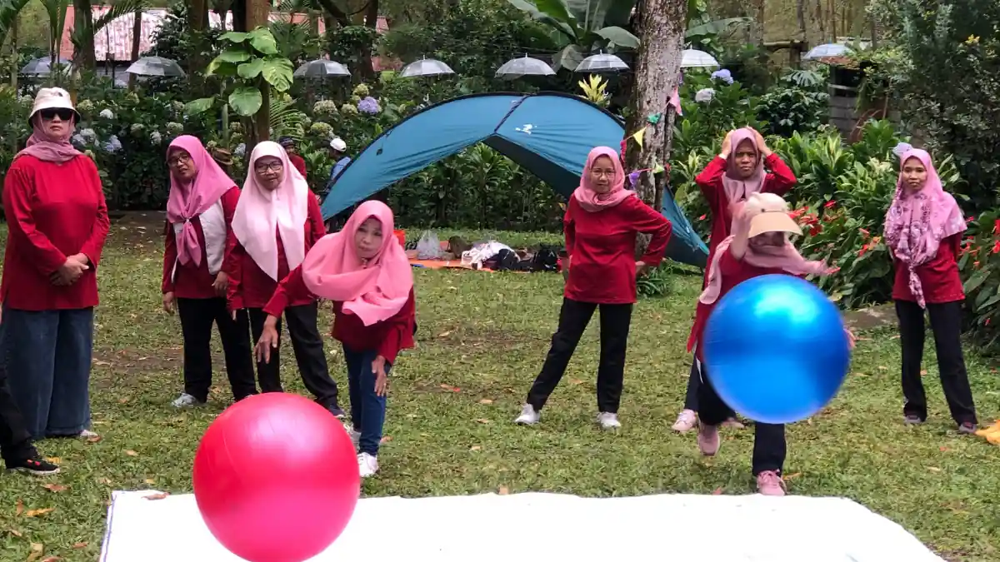
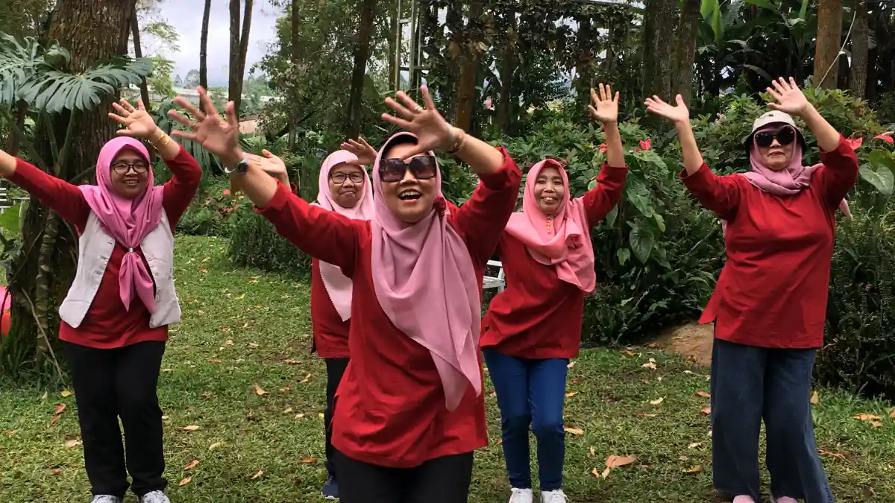

Outbound karyawan adalah kegiatan pengembangan tim di luar kantor yang memakai permainan dan tantangan kelompok untuk melatih komunikasi, koordinasi, dan kepercayaan antaranggota tim secara langsung dan terukur di lapangan.
Ringkasan Inti
- Outbound karyawan efektif menekan miskomunikasi karena menuntut interaksi verbal aktif, bukan sekadar kerja sama fisik semata.
- Keberhasilan sesi diukur dari kualitas interaksi peserta, bukan kecepatan menyelesaikan tantangan.
- Aktivitas bisa disesuaikan dengan jumlah peserta, mulai dari tim kecil 10 orang hingga gathering ratusan karyawan.
- Sesi debrief di akhir permainan adalah bagian yang paling sering diabaikan padahal paling menentukan hasil belajar.
- Perusahaan bisa mengurus sendiri kegiatan skala kecil, namun butuh EO untuk gathering skala besar.
1. Kenapa Miskomunikasi Masih Jadi Masalah Utama di Tempat Kerja?
Miskomunikasi terjadi ketika instruksi kerja tersampaikan secara tidak jelas atau ditafsirkan berbeda oleh anggota tim, dan ini kerap menjadi akar dari keterlambatan proyek serta kesalahan eksekusi tugas sehari-hari.
Masalah ini bukan hanya soal kurangnya kemampuan berbicara, tetapi juga rendahnya kebiasaan mendengarkan aktif dan memastikan pemahaman yang sama antaranggota tim sebelum eksekusi dimulai. Pelatihan formal di ruang kelas sering kali gagal menanamkan kebiasaan ini karena minim praktik langsung dalam situasi bertekanan waktu maupun ambiguitas informasi.
2. Kenapa Pelatihan Kelas Saja Tidak Cukup Mengatasi Miskomunikasi?
Pelatihan kelas saja tidak cukup mengatasi miskomunikasi karena format satu arah minim memberi ruang bagi peserta merasakan langsung konsekuensi dari instruksi yang salah dipahami.
Peserta cenderung lupa teori dalam hitungan minggu jika tidak dibarengi pengalaman nyata yang melibatkan emosi dan tekanan situasional, sementara outbound karyawan menempatkan mereka pada situasi yang menuntut komunikasi segera dan berkonsekuensi nyata.
3. Mengapa Outbound Karyawan Sangat Krusial untuk Komunikasi Tim?
Outbound karyawan sangat krusial untuk komunikasi tim karena setiap permainannya dirancang agar hanya bisa diselesaikan lewat instruksi verbal yang akurat dan koordinasi erat antaranggota, bukan sekadar kekompakan fisik semata.
Sebagian besar tantangan outbound menuntut peserta menyampaikan informasi secara jelas dalam waktu terbatas, sekaligus melatih kemampuan menerima dan menindaklanjuti instruksi orang lain tanpa asumsi sepihak. Ketika instruksi tidak jelas, tim akan langsung merasakan dampaknya secara nyata di lapangan, misalnya gagal menyelesaikan rintangan atau salah mengambil langkah yang berujung pengulangan tugas. Pengalaman "gagal karena salah komunikasi" inilah yang membuat pelajaran dari outbound lebih menempel dibanding sekadar teori di kelas pelatihan.
4. Apa Bedanya Outbound dengan Pelatihan Komunikasi Konvensional?
Bedanya outbound dengan pelatihan komunikasi konvensional terletak pada konteks pembelajaran yang bersifat pengalaman langsung, bukan penyampaian teori satu arah dari instruktur ke peserta.
Pada outbound, kesalahan komunikasi punya konsekuensi yang bisa langsung dirasakan dan dievaluasi bersama di lapangan, sehingga pembelajaran terjadi secara reflektif, kontekstual, dan lebih mudah diingat peserta setelah acara selesai.
5. Apa Indikator Keberhasilan Sesi Outbound Karyawan?
Indikator keberhasilan sesi outbound karyawan bukan dilihat dari seberapa cepat tantangan diselesaikan, melainkan dari kualitas interaksi dan perubahan pola komunikasi peserta selama permainan berlangsung dari awal hingga akhir.

| Indikator | Yang Diamati Fasilitator | Tanda Positif |
|---|---|---|
| Kejelasan instruksi | Apakah arahan verbal semakin ringkas dan tepat sasaran | Instruksi tidak diulang lebih dari 1-2 kali |
| Partisipasi merata | Apakah semua anggota berbicara, bukan hanya 1-2 orang dominan | Distribusi bicara terlihat seimbang |
| Kepercayaan antaranggota | Apakah peserta mau bergantung pada arahan rekan tanpa ragu | Tidak ada keraguan berlebihan saat menjalankan instruksi |
| Kemauan mengakui kesalahan | Apakah peserta terbuka mengoreksi strategi di tengah permainan | Ada penyesuaian taktik tanpa saling menyalahkan |


6. Kenapa Sesi Debrief di Akhir Permainan Sangat Menentukan?
Sesi debrief di akhir permainan sangat menentukan karena di momen inilah tantangan komunikasi yang muncul selama permainan dikaitkan secara sadar dengan situasi kerja sehari-hari peserta.
Tanpa debrief, permainan outbound hanya berhenti sebagai hiburan sesaat tanpa transfer pembelajaran yang jelas ke lingkungan kerja nyata. Fasilitator biasanya memandu diskusi dengan pertanyaan reflektif, misalnya bagian mana yang paling sulit dikomunikasikan, siapa yang merasa instruksinya sering disalahpahami, dan bagaimana pola ini mencerminkan kebiasaan kerja tim sehari-hari di kantor.
7. Aktivitas Outbound Apa Saja yang Bisa Mencairkan Suasana Kerja?
Aktivitas outbound yang efektif mencairkan suasana kerja adalah kombinasi permainan berbasis instruksi verbal, pemecahan masalah kelompok, dan sesi pengenalan personal yang ringan tanpa tekanan kompetisi berlebihan.
Blind Walk dan Minefield Melatih Kejelasan Instruksi Verbal
Permainan yang melatih kejelasan instruksi verbal adalah Blind Walk dan Minefield, di mana satu peserta ditutup matanya dan hanya bisa melewati rintangan berdasarkan panduan suara rekan timnya secara real-time. Kedua permainan ini secara langsung menunjukkan dampak instruksi yang ambigu atau terlambat disampaikan, karena kesalahan kecil dalam arahan bisa membuat peserta menabrak rintangan di depan mata seluruh tim.
Spider Web untuk Melatih Pemecahan Masalah Bersama
Permainan yang cocok untuk melatih pemecahan masalah bersama adalah Spider Web, yaitu tantangan melewati jaring tali tanpa menyentuhnya sama sekali dari satu sisi ke sisi lain. Permainan ini menuntut tim menyusun urutan strategi secara kolektif, sekaligus melatih rasa saling percaya karena setiap anggota bergantian dibantu melewati celah jaring oleh rekan-rekannya sendiri.

Office Trivia dan Bingo Kenalan Lintas Cabang Membantu Tim Saling Mengenal
Aktivitas yang membantu tim saling mengenal lebih dekat adalah Office Trivia dan Bingo Kenalan Lintas Cabang, di mana peserta diajak menjawab kuesioner ringan tentang kebiasaan kerja dan hobi rekan-rekannya sendiri. Format ini sangat berguna untuk tim lintas divisi atau lintas cabang yang jarang bertemu langsung, karena memberi alasan natural untuk saling menyapa tanpa terasa canggung di awal acara.
8. Apa Saja Kesalahan Umum Saat Menyelenggarakan Outbound Karyawan?
Kesalahan umum saat menyelenggarakan outbound karyawan adalah rundown yang terlalu padat tanpa jeda istirahat, permainan yang tidak disesuaikan dengan kondisi fisik peserta, dan absennya sesi debrief di penghujung acara.
- Rundown terlalu padat: Memaksakan terlalu banyak permainan dalam waktu terbatas membuat peserta kelelahan sebelum sesi inti selesai.
- Tidak mengenali kondisi peserta: Memilih permainan fisik berat tanpa mempertimbangkan usia atau kondisi kesehatan sebagian peserta.
- Melewatkan debrief: Menutup acara langsung setelah permainan usai tanpa refleksi membuat pembelajaran tidak menempel.
- Minim komunikasi awal: Peserta datang tanpa tahu tujuan acara sehingga partisipasi terasa dipaksakan.
9. Kapan HRD Bisa Mengurus Sendiri, dan Kapan Perlu Menyewa EO?
HRD bisa mengurus sendiri kegiatan outbound jika jumlah peserta relatif kecil, misalnya sekitar 20 orang, karena panitia internal dengan modal absensi dan pengatur waktu di ponsel biasanya sudah mencukupi untuk acara sekelas ini.
Namun untuk gathering skala besar dengan 80 orang ke atas, peran fasilitator atau Event Organizer (EO) profesional menjadi penting agar jadwal tidak molor dan HRD tetap bisa fokus mengamati jalannya acara.
10. Apa Saja yang Perlu Dipertimbangkan Sebelum Memilih EO?
Hal yang perlu dipertimbangkan sebelum memilih EO adalah pengalaman EO dalam menangani jumlah peserta serupa, ketersediaan fasilitator terlatih, dan fleksibilitas rundown yang ditawarkan sesuai kebutuhan perusahaan.
EO yang berpengalaman umumnya mampu menyesuaikan tingkat kesulitan permainan dengan kondisi fisik dan usia peserta, sehingga acara tetap aman dan inklusif bagi seluruh partisipan.
11. Faktor Apa yang Membuat Outbound Berjalan Lancar di Lapangan?
Faktor yang membuat outbound berjalan lancar di lapangan adalah rundown yang jelas dengan alokasi waktu realistis, lokasi yang sesuai kebutuhan aktivitas, dan komunikasi awal yang matang antara HRD, fasilitator, dan peserta.
12. Bagaimana Memilih Lokasi yang Tepat untuk Outbound Karyawan?
Lokasi yang tepat untuk outbound karyawan adalah tempat dengan ruang terbuka memadai, akses yang mudah dijangkau seluruh peserta, dan fasilitas pendukung seperti area istirahat serta toilet yang layak digunakan sepanjang acara.
Kawasan dengan udara sejuk dan pemandangan alam umumnya lebih disukai karena membantu peserta lebih rileks sebelum memasuki sesi permainan, sekaligus mendukung suasana yang lebih terbuka untuk berkomunikasi secara natural.
Outbound karyawan memberi simulasi nyata mengenai pentingnya instruksi yang jelas dan kemampuan mendengarkan aktif, dua hal yang sering luput dari pelatihan formal berbasis kelas.
13. Pertanyaan yang Sering Diajukan
Abiyyu
Seorang penulis artikel yang sudah berpengalaman di dalam dunia wisata outbound Batu Malang.